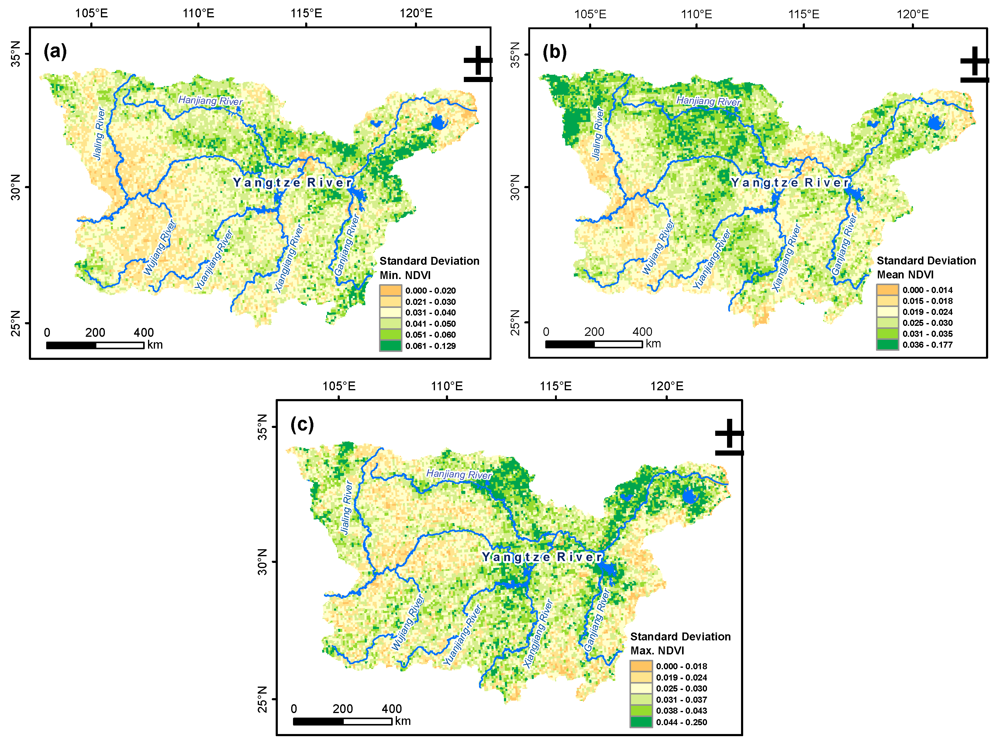
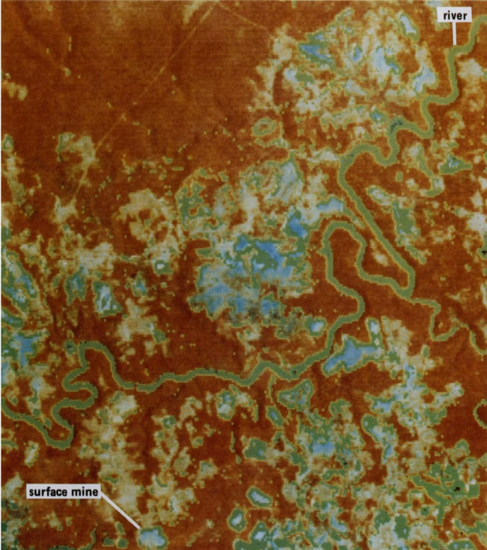

3 Week 3-Remote sensing data
3.1 Summary
3.1.1 Corrections
- Geometric Corrections: Addressing distortions due to view angle, topography, wind, and Earth’s rotation. Algorithms such as linear regression, Helmert transformation, polynomial transformations (1st to 3rd degree), Thin Plate Spline (TPS), and projective transformation are chosen based on their ability to minimize RMSE.
- Atmospheric Corrections: Overcoming atmospheric scattering and attenuation effects via methods like Empirical methods, Dark Object Subtraction(DOS), Pseudo-invariant Features (PIFs) or through complex atmospheric radiative transfer models.
- Topographic/Orthorectification Corrections: Adjusting the viewing angle to treat slope and elevation distortions, often requiring solar zenith and azimuth angles through techniques like Cosine correction, Minnaert correction, Statistical Empirical correction, and C Correction (an advancement of the Cosine correction).
- Radiometric Calibration: Converting Digital Numbers to spectral radiance, adjusting for the sensor’s measurements of upwelling radiation.
3.1.2 Data Joining
- Mosaicking: The process of combining multiple images, ensuring they blend seamlessly at the edges, often involves histogram matching and feathering.
3.1.3 Enhancements
- Enhancements refine the visual and analytical quality of satellite imagery without altering the actual data values.
- Methods including Contrast Enhancement, Ratio, Filtering, PCA, and Texture Analysis.
- Techniques such as contrast enhancement make images more interpretable, while PCA reduces dimensionality, isolating significant changes in multi-temporal analysis.
3.2 Application
3.2.1 Ratio: Normalised Difference Vegetation Index (NDVI)
Pei, Fengsong, et al(2021) explored the use of NDVI in monitoring extreme precipitation events in the Middle and Lower Reaches of the Yangtze River (MLR-YR) in China from 1982 to 2012. It evaluates how minimum, mean, and maximum NDVI values, derived from satellite data, can reflect the variability in vegetation activity due to extreme precipitation changes. The research finds that maximum NDVI is particularly responsive to these changes, and both maximum and minimum NDVI demonstrate significant spatial variability in response to extreme precipitation

This set of maps displays the standard deviation of the Normalized Difference Vegetation Index (NDVI) in the Middle and Lower Reaches of the Yangtze River in China. Map (a) represents the standard deviation of the minimum NDVI values, indicating the variability of the lowest NDVI readings, which might reflect the least vegetative state or periods of low vegetation health. Map (b) shows the standard deviation of the mean NDVI, which represents the average variability in vegetation greenness over time. Map (c) depicts the standard deviation of the maximum NDVI values, highlighting the variability in the peak vegetation period or the healthiest vegetative state. The different shades of green to yellow across the maps indicate areas with varying levels of NDVI variability. Areas with higher standard deviation values, shown in darker colors, may experience more significant changes in vegetation due to various factors such as seasonal changes, agricultural practices, or extreme weather events. These maps are useful for identifying patterns of vegetation dynamics and potential areas of ecological stress or change.
3.2.2 Texture
James R. Irons and Gary W. Petersen explores the application of image texture in the digital analysis of remotely sensed data.They develops software to quantify image texture and applies it to both image enhancement and thematic classification of remotely sensed Landsat-2 MSS data.They use SUBTEXT to calculate various local properties within pixel windows to generate texture transforms, which provide discrete measurements for each pixel.These texture transforms effectively delineate edges and enhance imagery.

3.3 Reflection
This week’s content was exponentially more difficult for me. There were too many unfamiliar terms, and the mathematical logic behind each method was difficult for me to understand. In comparison, the correction part is easier to understand, it’s like data cleaning. However, unlike panel data, remote sensing data contain a large amount of spatiotemporal information, so unique methods must be used to correct them. But many remote sensing products come pre-corrected, which greatly simplifies the analyst’s workflow.
The enhancement part was harder for me to understand, so I read the literature to see how academics were using enhancement techniques. Finally I came to the conclusion that enhancement is a method to pursue specific remote sensing information. Similar to when we deal with panel data, we need to find the variance or average for different needs, and the same is true for enhancement. It is based on data reprocessing for research purposes.
Correcting, joining data sets, and enhancements together constitute remote sensing data preprocessing. Advances in preprocessing not only enhance visual interpretation of remote sensing but also significantly improve spectral accuracy for a variety of applications.